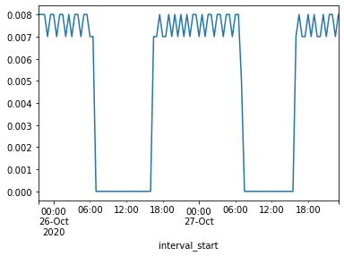

Getting Started¶

You can follow along in a live online coding environment thanks to Binder.
Installing Octopy-Energy¶
The first step to getting running with the library is to install it through pip.
! pip install octopyenergy
Once installed octopyenergy can be imported into your scripts.
import octopyenergy as oe
from octopyenergy.api import DownloadManager
User Inputs¶
We now need to assign values for our account/meter details.
N.b. we recommend that you store your account details in a .env file and then use the dotenv library to set them as environment variables, which can in turn be picked up by os and assigned to local variables.
octopus_api_key = 'your_octopus_api_key'
meter_mpan = 'your_meter_mpan'
meter_serial = 'your_meter_serial'
Using the Download Manager¶
We'll start by initialising the DownloadManager, when we do so we can pass a number of parameters which will configure defaults in the download manager. The octopus_api_key is also required for some requests.
download_manager = DownloadManager(meter_mpan=meter_mpan,
meter_serial=meter_serial,
api_key=octopus_api_key)
download_manager
Welcome to the octopyenergy DownloadManager! For more information please read the documentation at https://github.com/AyrtonB/Octopy-Energy.
The following API end-points are available:
retrieve_products, retrieve_product, retrieve_tariff_charges, retrieve_meter_point, retrieve_electricity_consumption, retrieve_gas_consumption, retrieve_gsps
One of the benefits of specifying these parameters is that they will be used to pre-populate the function docstrings.
help(download_manager.retrieve_meter_point)
Help on function retrieve_meter_point:
retrieve_meter_point(meter_mpan='your_meter_mpan', **kwargs)
Retrieves a meter-point
Parameters:
meter_mpan
Specifying those parameters also reduces the amount of arguments we need to pass when making data requests.
s_elec_consumption = download_manager.create_elec_consumption_s()
s_elec_consumption.plot()

A number of the end-points do not require an API key or additional arguments, these will work even when no parameters are specified during the DownloadManager initialisation.
download_manager = DownloadManager()
download_manager.retrieve_gsps().json()
For those that do an Exception will be raised detailing why the request was unsuccessful.
def request_electricity_consumption(download_manager, meter_mpan=None, meter_serial=None):
try:
download_manager.retrieve_electricity_consumption(meter_mpan=meter_mpan, meter_serial=meter_serial)
print('Successfully retrieved!')
except oe.api.SadOctopy as err:
print(err)
request_electricity_consumption(download_manager, meter_mpan, meter_serial)
This can easily be remedied by calling the autheticate method and passing your api key.
download_manager.authenticate(octopus_api_key)
request_electricity_consumption(download_manager, meter_mpan, meter_serial)
A similar event may occur if you provided no parameters when the download manager was initialised, then try to call a function that requires one of those parameters for a default. To assign these parameters we can call a method where assign is used as a prefix, e.g. download_manager.assign_<parameter_name>(<parameter_value>).
download_manager.assign_meter_mpan(meter_mpan)
download_manager.assign_meter_serial(meter_serial)
s_elec_consumption = download_manager.create_elec_consumption_s()
s_elec_consumption.head()
| interval_start | consumption |
|---|---|
| 2020-10-27 23:00:00+00:00 | 0.008 |
| 2020-10-27 22:30:00+00:00 | 0.007 |
| 2020-10-27 22:00:00+00:00 | 0.008 |
| 2020-10-27 21:30:00+00:00 | 0.008 |
| 2020-10-27 21:00:00+00:00 | 0.007 |
Congratulations, you're now ready to get up and running with octopyenergy!